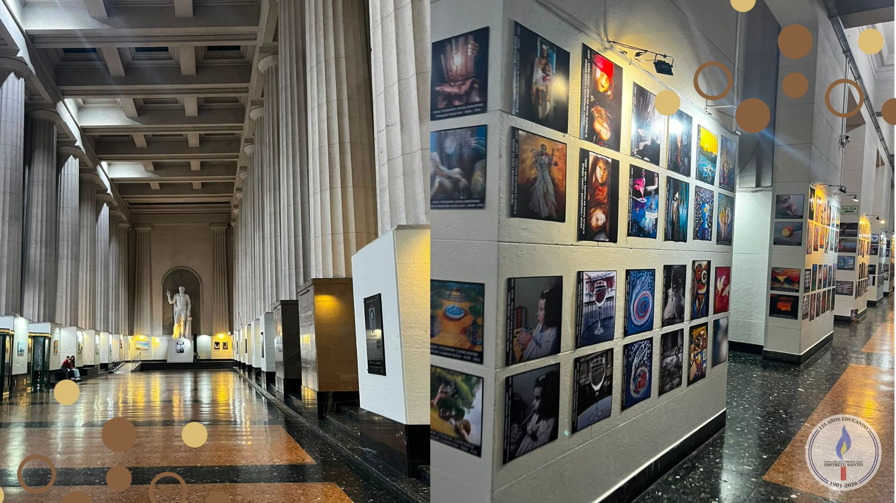

Salida a la facultad de Derecho
Por: Jazmin Antunez y Maia Lopez Arrozpide

Participaron los alumnos de 5°A y B.
Los estudiantes de 5º A y B participaron en la salida a la Facultad de Derecho (UBA) acompañados por el profesor Luciano Pagano y la tutora Karla Perez Molet.
Hicimos un recorrido por toda la facultad, mostrándonos la historia a lo largo que íbamos caminando. Vimos como por dentro contenía historia y también pudimos ver exhibiciones de arte que se realizaban.
Determinamos como en los pilares de la Facultad vimos el preámbulo de la Constitución Nacional y el Acta de la Independencia.
Por otro lado, nos enteramos de todos los presidentes de la República Argentina que estudiaron en la Facultad de Derecho, brindándonos más información a todos los estudiantes. Al terminar el recorrido, cada estudiante retomó el rumbo hacia el colegio.